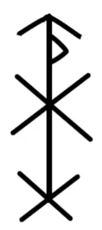

Rune Grimoire
Runic Love Bind Rune
A six-stave bind rune (galdrastafr) designed for love magick. All six runes are fused into a single form, combining their ideographic forces into one unified field of attraction, binding, and erotic union.

Construction
The bind rune fuses all six staves into a single galdrastafr. The alternate form of the E-rune (Ehwaz) may be employed in its construction. During the loading process, each stave must first be carved and loaded separately, then bound together in a single field of force during the coloring phase.
Numerical Analysis
- Rune count: 6 (multiple: 2 x 3)
- Runic total: 60 (multiple: 6 x 10)
See Foundations & Ethics for deeper interpretation of these values.
Usage
This bind rune is central to the Runic Love Talisman ritual. It may be carved onto a tine, etched into jewelry, or rendered in any talismanic form suited to the operation.